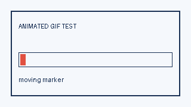
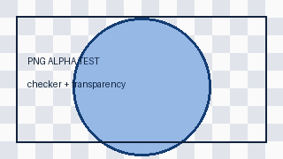

Image format test
All files are served from the same site and require no external CDN.
| Format | Image | Expected result |
|---|---|---|
| GIF89a |  | A small indicator moves from left to right. |
| JPEG | A blue gradient with readable labels. | |
| PNG |  | A checker pattern and a semi-transparent circle on capable browsers. |
| Missing image | The alternative text or a broken-image indicator appears. |
Some very old browsers have incomplete alpha transparency support for PNG. Showing the image without smooth transparency is still a useful result.